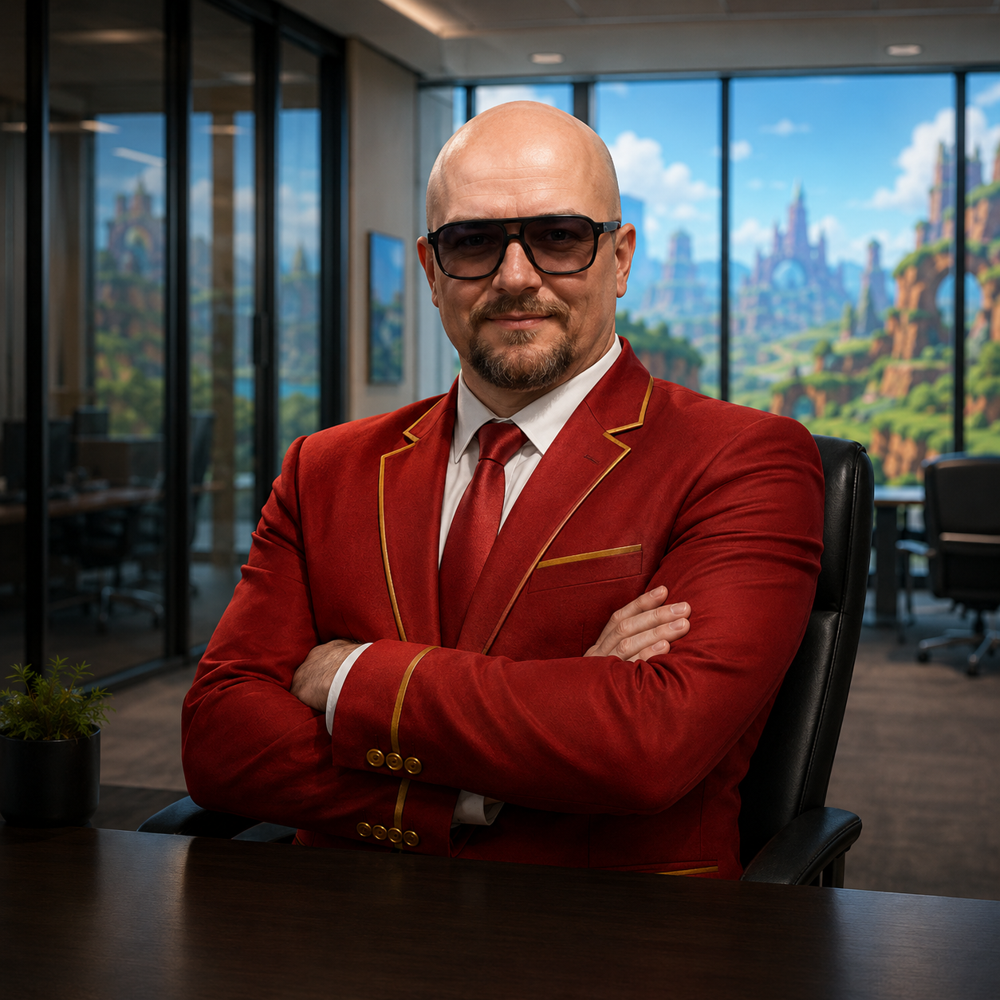

Sanval Ebert
PROFESSOR • PESQUISADOR • DOUTOR
Computação, Educação e Inteligência Artificial
Professor e pesquisador na convergência entre Computação, Educação e Inteligência Artificial.
Atua na convergência entre Computação, Educação e Inteligência Artificial, integrando liderança acadêmica, docência, pesquisa aplicada e inovação curricular.
Na Universidade SENAI CIMATEC, atua na coordenação dos cursos de Engenharia de Computação e Ciência de Dados e Inteligência Artificial.
Sua pesquisa envolve a aplicação da Inteligência Artificial na educação, com ênfase em ambientes virtuais de ensino e aprendizagem, agentes inteligentes, personalização da aprendizagem e tecnologias imersivas.
Áreas de pesquisa e atuação
Sua trajetória acadêmica e profissional reúne diferentes áreas relacionadas à tecnologia e à educação.
Trajetória acadêmica e profissional
Universidade SENAI CIMATEC
Coordenador dos cursos de Engenharia de Computação, Ciência de Dados e Inteligência Artificial.
Professor e pesquisador
Atuação em tecnologias, educação, pesquisa aplicada e desenvolvimento de soluções educacionais.
Faculdade Regional de Filosofia, Ciências e Letras de Candeias
Professor no ensino superior.
Formação acadêmica
Difusão do Conhecimento
IFBA — Instituto Federal da Bahia
Modelagem Computacional, Educação e Inteligência ArtificialGestão e Tecnologias em Educação
UNEB — Universidade do Estado da Bahia
Licenciatura em Pedagogia
UNEB — Universidade do Estado da Bahia